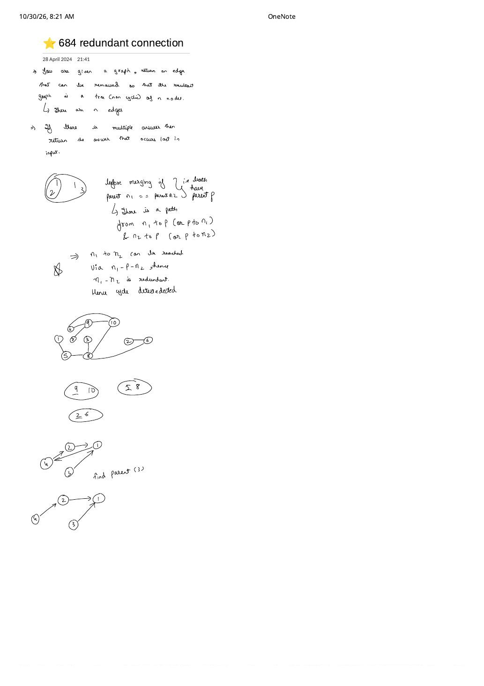

LC 684: Redundant Connection — Streaming Cycle Detection & Shared Ultimate Parent Proof
Expanded from handwritten competitive coding study note: 05_684_redundant_connection.pdf (dated April 28, 2024) · View original handwritten page
1. Problem Statement
A tree is an undirected connected graph with no cycles ($n$ vertices labeled $1 \dots n$ and $n - 1$ edges). You are given a graph that started as a tree on $n$ nodes ($3 \le n \le 1000$) with one additional undirected edge added ($|E| = n$). Return an edge that can be removed so that the resulting graph is a tree of $n$ nodes. If there are multiple candidate edges, return the answer that occurs last in the input array edges.
2. Core Proof from the Handwritten Sheet: Why findPar(n1) == findPar(n2) Solves Both Conditions
Adding one extra edge to a tree on $n$ vertices produces a unicyclic graph—a connected graph containing exactly one simple cycle $C$. Removing any edge $e \in C$ breaks that unique cycle while keeping all $n$ vertices connected, whereas removing a non-cycle bridge disconnects the graph. Therefore, the candidate answers are precisely the edges of $C$, and we want whichever edge of $C$ appears last in edges.
The Shared Ultimate Parent Proof (n1 — p — n2)
Stream edges $[n_1, n_2]$ from left to right while maintaining DSU over $1 \dots n$:
- Before merging $[n_1, n_2]$: Suppose $\text{findPar}(n_1) == \text{findPar}(n_2) == p$. Because DSU links only vertices connected by earlier edges, there is already an undirected path in our forest from $n_1$ to $p$ and from $n_2$ to $p$—meaning $n_1$ can already reach $n_2$ via $n_1 \leadsto p \leadsto n_2$!
- Closing the unique cycle: Every edge of the graph except the very last arriving edge of $C$ joins two previously separate subtrees ($\text{findPar}(u) \ne \text{findPar}(v)$). Specifically, the first $|C| - 1$ edges of $C$ simply build the tree path $n_1 \leadsto p \leadsto n_2$.
- Automatic last-in-input guarantee: At the exact instant the last edge of $C$ in input order arrives, its endpoints are already connected for the first and only time! Returning $[n_1, n_2]$ immediately solves both cycle detection and tie-breaking in a single pass.
05_684_redundant_connection.pdf: (Left) Shared root $p$ proves $[n_1, n_2]$ closes a cycle. (Right) When isolated pairs (9, 10), (5, 8), and (2, 6) form first, edge [10, 8] touches two already-seen nodes without forming a cycle because $\text{findPar}(10) \ne \text{findPar}(8)$.Why Checking visited.count(u) && visited.count(v) Fails (The (9,10), (5,8), (2,6) Trap!)
Look at the middle sketch on the handwritten page showing disjoint ovals (9, 10), (5, 8), and (2, 6) inside a 10-node graph. Beginners often try to detect the redundant edge with a single unordered_set<int> seen: "if both endpoints are already in seen, return that edge."
That fails immediately when edges arrive out of tree order! After [9, 10] and [5, 8] arrive, all four nodes {5, 8, 9, 10} are in seen. When bridge edge [10, 8] arrives next, both 10 and 8 are in seen, yet [10, 8] merely joins two separate components! Only DSU's component-aware test findPar(10) == findPar(8) distinguishes a valid bridge from a cycle-closing chord.
3. Brute $\to$ Better $\to$ Optimal Progression
| Approach | Time | Space | Key Mechanism |
|---|---|---|---|
| Incremental DFS / BFS per Edge | $\mathcal{O}(n^2)$ | $\mathcal{O}(n)$ | Before adding $[u, v]$ to adjacency list, run DFS from $u$ to check if $v$ is already reachable. |
| Topological Leaf Peeling (Kahn's) | $\mathcal{O}(n)$ | $\mathcal{O}(n)$ | Repeatedly strip degree-$1$ leaves from the full graph; remaining vertices with degree $\ge 2$ form the exact cycle $C$; scan edges backward. |
| Streaming DSU | $\mathcal{O}(n \cdot \alpha(n))$ | $\mathcal{O}(n)$ | Single forward pass with 10 lines of array code—no adjacency lists or queues required! |
4. Step-by-Step Dry Run (Including Path Compression at Bottom of Sheet)
Tracing edges = [[1, 2], [2, 4], [1, 3], [3, 4], [4, 5]] ($n = 5$)
Initial: parent = [0, 1, 2, 3, 4, 5], rnk = [0, 0, 0, 0, 0, 0] (1-indexed).1. Edge
[1, 2]: p1 = 1, p2 = 2 ($\ne$) $\implies$ parent[2] = 1, rnk[1] = 1.2. Edge
[2, 4]: findPar(2) = 1, findPar(4) = 4 ($\ne$) $\implies$ parent[4] = 1 (or if 4 → 2 → 1 before compression, next findPar(4) compresses parent[4] = 1 directly, matching the bottom sketch of the handwritten page!).3. Edge
[1, 3]: findPar(1) = 1, findPar(3) = 3 ($\ne$) $\implies$ parent[3] = 1.4. Edge
[3, 4]: findPar(3) = 1 and findPar(4) = 1 $\implies$ p1 == p2 == 1! Path $3 - 1 - 2 - 4$ already exists, so return [3, 4] immediately!
5. Clean C++ & Python Implementations
Note that vertex labels in LC 684 are 1-indexed ($1 \dots n$), so we allocate arrays of length $n + 1$:
#include <bits/stdc++.h>
using namespace std;
class Solution {
public:
vector<int> findRedundantConnection(vector<vector<int>>& edges) {
int n = edges.size();
vector<int> parent(n + 1), rnk(n + 1, 0);
iota(parent.begin(), parent.end(), 0);
auto findPar = [&](auto& self, int x) -> int {
return parent[x] == x ? x : parent[x] = self(self, parent[x]);
};
for (const auto& e : edges) {
int p1 = findPar(findPar, e[0]);
int p2 = findPar(findPar, e[1]);
if (p1 == p2) {
return e; // Existing path e[0] ~ p1 ~ e[1] -> cycle closed!
}
if (rnk[p1] < rnk[p2]) swap(p1, p2);
parent[p2] = p1;
if (rnk[p1] == rnk[p2]) rnk[p1]++;
}
return {};
}
};class Solution:
def findRedundantConnection(self, edges: list[list[int]]) -> list[int]:
n = len(edges)
parent = list(range(n + 1))
rank = [0] * (n + 1)
def find(x: int) -> int:
if parent[x] != x:
parent[x] = find(parent[x])
return parent[x]
for u, v in edges:
pu, pv = find(u), find(v)
if pu == pv:
return [u, v]
if rank[pu] < rank[pv]:
pu, pv = pv, pu
parent[pv] = pu
if rank[pu] == rank[pv]:
rank[pu] += 1
return []6. Complexity Proof & Key Edge Cases
- Time Complexity — $\mathcal{O}(n \cdot \alpha(n))$: At most $n$ edge iterations, each performing two
findParcalls and at most one constant-time rank merge. - Space Complexity — $\mathcal{O}(n)$: Two vectors of $n + 1$ integers (far smaller than building an $\mathcal{O}(n)$ vector-of-vectors adjacency list).
- Key Edge Cases & Extensions:
- 1-indexed vertex IDs ($1 \dots n$): Sizing
parentto $n$ instead of $n + 1$ causes an out-of-bounds read on vertex $n$. - Cycle closes before all $n$ edges are read: E.g., triangle
[[1,2], [2,3], [1,3], [3,4]]—edge[1,3]triggersp1 == p2on step 3 and returns early safely because remaining edges ([3,4]) are guaranteed to be tree branches outside the unique cycle. - Directed graph variant (LC 685: Redundant Connection II): Note that plain DSU works directly here because LC 684 is undirected; in a directed rooted tree, you must also check for a node with in-degree $2$ before applying cycle DSU!
- 1-indexed vertex IDs ($1 \dots n$): Sizing
From the Handwritten Notes
View original handwritten page — 05_684_redundant_connection.pdf (Cycle proof n1-p-n2, multi-component sketch & path compression)


05_684_redundant_connection.pdf (28 April 2024): Proof that parent(n1) == parent(n2) == p implies path $n_1 - p - n_2$, 10-node component grouping (9,10), (5,8), (2,6), and path-compression pointer flattening.